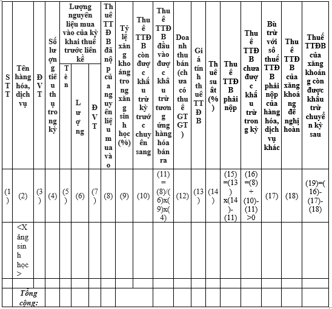
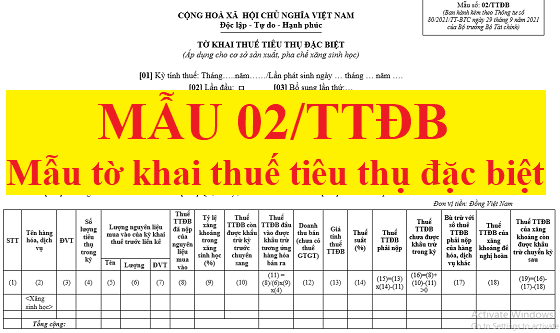

Đối với cơ sở sản xuất, pha chế xăng sinh học khi làm hồ sơ khai thuế tiêu thụ đặc biệt cần lập Mẫu 02/TTĐB ban hành kèm theo thông tư 80/2021/TT-BTC.
Xem thêm: Cách tính thuế tiêu thụ đặc biệt
CỘNG HOÀ XÃ HỘI CHỦ NGHĨA VIỆT NAM
Độc lập - Tự do - Hạnh phúc TỜ KHAI THUẾ TIÊU THỤ ĐẶC BIỆT (Áp dụng cho cơ sở sản xuất, pha chế xăng sinh học) [01] Kỳ tính thuế: Tháng…..năm……/Lần phát sinh ngày … tháng … năm …. [02] Lần đầu: * [03] Bổ sung lần thứ:… 04] Tên người nộp thuế:.............................................................. [05] Mã số thuế: ............................................................. [06] Tên đại lý thuế (nếu có):........................................................... [07] Mã số thuế: ............................................................. [08] Hợp đồng đại lý thuế: Số:........................ ngày:........................ [09] Tên đơn vị phụ thuộc/địa điểm kinh doanh của hoạt động sản xuất kinh doanh khác tỉnh nơi đóng trụ sở chính: [10] Mã số thuế đơn vị phụ thuộc/Mã số địa điểm kinh doanh:…………….……… [11] Địa chỉ nơi có hoạt động sản xuất kinh doanh khác tỉnh nơi đóng trụ sở chính: [11a] Phường/xã………………….… [11b] Quận/Huyện ……………..……… [11c] Tỉnh/Thành phố…………….…………
Đơn vị tiền: Đồng Việt Nam
 (TTĐB: tiêu thụ đặc biệt; GTGT: giá trị gia tăng) Tôi cam đoan số liệu kê khai trên là đúng sự thật và chịu trách nhiệm trước pháp luật về số liệu đã kê khai./.
Ghi chú:
4. Nội dung nêu trong dấu <> chỉ là giải thích hoặc ví dụ. |
Xem thêm: Cách tính thuế tiêu thụ đặc biệt
